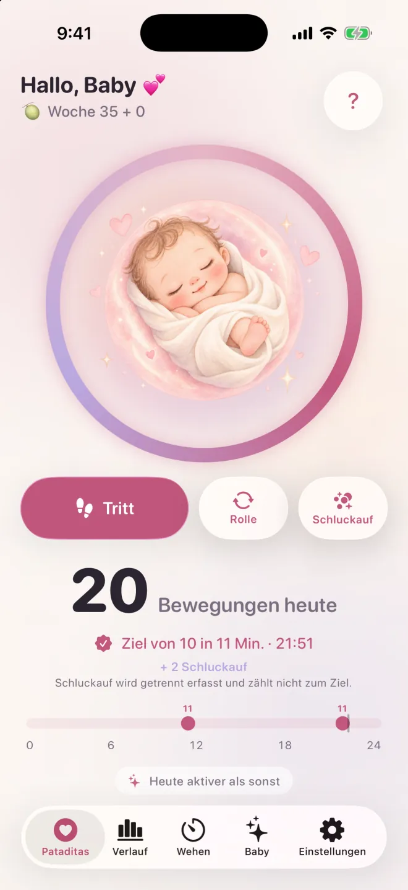

Tippen zum Erfassen
Ein Tippen bei jeder Bewegung deines Babys. Nichts zu starten, nichts zu stoppen.
Tippe einfach, wenn sich dein Baby bewegt. Pataditas gruppiert die Bewegungen für dich und gibt dir sanft Bescheid, wenn du 10 in 2 Stunden erreichst. Keine Timer, keine Sitzungen, kein Konto. Erfasse auf deinem iPhone oder deiner Apple Watch.
Laden im App StoreWie viele Tritte sind normal, und wann du anrufen solltest →
iPhone und Apple Watch · ab iOS 26 und watchOS 26 · 11 Sprachen

Die meisten Tritt-Zähler verlangen, dass du „Start“ drückst, die Uhr im Auge behältst und „Stopp“ drückst. Aber Babys bewegen sich nicht nach Zeitplan, und du solltest dein Handy nicht wie eine Stoppuhr halten müssen.
In Pataditas tippst du einfach, wenn du einen Tritt oder eine Rolle spürst. Die App gruppiert deine Eingaben selbstständig zu einer Zählung und merkt, wenn du 10 Bewegungen innerhalb von 2 Stunden erreichst – dann feiert sie ganz leise mit dir.
Weniger Tasten, weniger Druck, mehr Zeit, sich an den kleinen Füßchen zu freuen.

Tippe auf „Bewegung erfassen“, wann immer du einen Tritt oder eine Rolle festhalten möchtest. Es gibt keine Sitzung, die du starten oder beenden musst. Schluckauf kannst du getrennt erfassen.

Sanfte Helfer für die zweite Hälfte deiner Schwangerschaft, gemacht, um sich wie ein tiefer Atemzug anzufühlen.
Ein Tippen bei jeder Bewegung deines Babys. Nichts zu starten, nichts zu stoppen.
Wähle, was du gespürt hast. Schluckauf wird in deinem Verlauf gespeichert, zählt aber nicht zu den 10.
Pataditas erkennt 10 Bewegungen innerhalb von 2 Stunden und feiert das mit einer sanften Animation.
Sieh deinen ganzen Tag auf einen Blick, mit einem Verlauf aller vorherigen Tage.
Vergleiche die heute erfassten Bewegungen mit deinen früheren Tagen. Fehlende Einträge können den Vergleich verändern; er ist keine medizinische Beurteilung.
Aktivste Tageszeit, Trends und Wochentage. Teil von Pataditas Plus.
Bring eine übersichtliche Zusammenfassung zu deinem nächsten Termin mit. Teil von Pataditas Plus.
Miss Wehen und erhalte einen Hinweis, wenn du das 5-1-1-Muster erreichst.
Verfolge deine Schwangerschaftswoche und sieh, wie groß dein Baby ist.
Widgets auf dem Home- und Sperrbildschirm, Kontrollzentrum, Siri und die Aktionstaste.
Erfasse Bewegungen auf deiner Apple Watch, mit Komplikationen auf dem Zifferblatt für den schnellen Zugriff.
Ein sanfter Anstoß zur gewählten Uhrzeit, um dir einen ruhigen Moment mit deinem Baby zu nehmen.
Junge, Mädchen oder Überraschung: personalisierte Bilder in sanftem Aquarell.
Nach sieben Tagen mit Einträgen siehst du, wie die heute erfassten Bewegungen zu deinen bisherigen Aufzeichnungen passen. Fehlende Einträge können den Vergleich verändern; er ist keine medizinische Beurteilung.
Du fragst dich, wie viele Bewegungen normal sind? Lies, wie der NHS und Count the Kicks das Zählen sehen →

Pataditas enthält eine begleitende Apple Watch App (ab watchOS 26). Tippe auf deine Uhr, jedes Mal wenn du eine Bewegung spürst, und füge Pataditas deinem Zifferblatt oder Smart-Stapel hinzu, um schnell darauf zuzugreifen. Die Einträge werden über deine private iCloud mit der iPhone App synchronisiert.
Die Watch App funktioniert zusammen mit der iPhone App, die du im App Store lädst.
Wähle Junge, Mädchen oder Überraschung, und die ganze App wird passend gemalt.


Deine Schwangerschaft gehört dir.
Öffne die App und leg los. Wir fragen nie nach deiner E-Mail-Adresse, deinem Namen oder deiner Telefonnummer.
Keine Werbung und keine Tracking-SDKs. Anonyme Nutzungsstatistiken sind freiwillig.
Alles wird auf deinem iPhone und in deiner eigenen privaten iCloud (CloudKit) gespeichert. Der Entwickler kann es nicht sehen.
Zahlungen werden vollständig von Apple abgewickelt. Wir sehen deine Zahlungsdaten nie.
Erfasse Bewegungen, sieh deinen Tagesverlauf und feiere deine 10 in 2 Stunden, ohne Kosten. Upgrade nur, wenn du tiefere Einblicke möchtest.
Immer kostenlos
Einmalzahlung · Empfohlen
7 Tage gratis testen · jederzeit kündbar
Preise für Deutschland in Euro (EUR); der App Store zeigt dir den Preis für dein Land an. Der Schwangerschaftspass ist eine Einmalzahlung ohne Verlängerung. Plus monatlich verlängert sich automatisch, sofern du nicht mindestens 24 Stunden vor Ende des Zeitraums kündigst. Jederzeit in den Einstellungen deines iPhone kündbar.
Kurze Antworten dazu, was der NHS und Count the Kicks sagen, und zu Pataditas. Allgemeine Informationen, keine medizinische Beratung.
Count the Kicks empfiehlt, eine Tageszeit zu wählen, zu der dein Baby meist aktiv ist, dich mit hochgelegten Füßen hinzusetzen oder dich auf die Seite zu legen und jede Bewegung zu notieren, bis du 10 erreichst. Mit Pataditas tippst du einfach, wann immer du einen Tritt, eine Rolle oder ein Schwappen spürst; es gibt nichts zu starten oder zu stoppen, und die App behält Zählung und Uhrzeit für dich im Blick. Der NHS sagt, dass du nicht zählen musst. Frage also deine Hebamme oder Ärztin bzw. deinen Arzt, welches Vorgehen sie empfehlen.
Es gibt keine einzelne normale Zahl. Der NHS sagt, dass es keine feste Anzahl an Bewegungen gibt, die du pro Tag spüren solltest; wichtig ist, das übliche Muster deines Babys kennenzulernen. Count the Kicks empfiehlt stattdessen, ab der 28. Woche jeden Tag zu etwa derselben Uhrzeit zu messen, wie lange es dauert, 10 Bewegungen zu spüren. Was immer du tust: Wende dich sofort an deine Hebamme, Arztpraxis oder Entbindungsstation, wenn sich das Muster verändert.
Die meisten spüren die ersten Bewegungen zwischen etwa der 16. und 24. Woche (NHS); bei einer ersten Schwangerschaft kann es auch nach der 20. Woche sein. Count the Kicks empfiehlt, ab der 28. Woche täglich zu zählen, bei einer Risikoschwangerschaft oder wenn du mehr als ein Baby erwartest ab der 26. Woche, während der NHS sagt, dass Zählen nicht erforderlich ist. Wenn du bis zur 24. Woche noch keine Bewegung gespürt hast, sage deiner Hebamme Bescheid. Frage deine Hebamme oder Ärztin bzw. deinen Arzt, was sie für dich empfehlen.
Die Empfehlungen zum Zählen unterscheiden sich. Count the Kicks (USA) empfiehlt, zu messen, wie lange es dauert, 10 Bewegungen zu spüren, beginnend ab der 28. Woche (ab der 26. Woche bei erhöhtem Risiko oder wenn du mehr als ein Baby erwartest). Der NHS (Großbritannien) sagt, dass es keine feste Anzahl an Bewegungen gibt und du Tritte nicht zählen musst, du aber das übliche Muster deines Babys kennenlernen solltest. In dem entscheidenden Punkt sind sich beide einig: Wenn sich dein Baby weniger bewegt als sonst, sich nicht mehr bewegt oder sich das Muster verändert, wende dich sofort an deine Hebamme, Arztpraxis oder Entbindungsstation. Der NHS fügt hinzu, dass du auch mitten in der Nacht anrufen und nicht bis zum nächsten Tag warten sollst. Pataditas erfasst nur, was du spürst; frage dein Betreuungsteam, welches Vorgehen es empfiehlt.
Nein. Count the Kicks zählt Schluckauf nicht mit, weil er dort als unwillkürlich beschrieben wird. In Pataditas kannst du Schluckauf als eigene Art erfassen: Er wird in deinem Verlauf gespeichert, zählt aber nicht zu den 10 Bewegungen. Wenn du unsicher bist, ob du Schluckauf oder eine Bewegung gespürt hast, frage deine Hebamme oder Ärztin bzw. deinen Arzt.
Pataditas fasst 10 erfasste Tritte oder Rollen innerhalb von zwei Stunden zusammen. Das ist die eigene Gruppierung der App: Sie ist weder eine Gesundheitsbeurteilung noch ein allgemeingültiges Tagesziel. Folge den Hinweisen deines Betreuungsteams.
Wende dich sofort an deine Hebamme, Arztpraxis oder Entbindungsstation, wenn die Bewegungen nachlassen, aufhören oder sich verändern. Warte nicht auf ein Zählziel und nicht bis morgen. Der NHS sagt, du sollst sofort anrufen, auch mitten in der Nacht, und dich nicht auf ein Gerät zum Abhören der Herztöne zu Hause verlassen. NHS.
Nach sieben Tagen mit Einträgen zeigt dir Pataditas, wie die heute erfassten Bewegungen im Vergleich zu deinen früheren Tagen aussehen. Fehlende Einträge können den Vergleich verändern. Die App kann nicht alle Bewegungen messen und nicht sagen, ob es deinem Baby gut geht, und sie ist keine medizinische Beurteilung.
Ja. Es gibt kein Konto, keine Werbung und kein Tracking, und anonyme Nutzungsstatistiken sind freiwillig und bleiben ausgeschaltet, solange du sie nicht einschaltest. Deine Daten bleiben auf deinem iPhone und in deiner eigenen privaten iCloud (CloudKit). Der Entwickler kann sie nicht sehen. Lies die vollständige Datenschutzerklärung.
Ja, du kannst Bewegungen ohne Verbindung erfassen. Wenn du bei iCloud angemeldet bist, werden deine Daten privat über deinen eigenen iCloud-Account zwischen deinen Geräten synchronisiert, und deine Einstellungen (etwa dein Name und dein Geburtstermin) werden über den iCloud-Key-Value-Speicher synchronisiert. Beides ist für uns nicht sichtbar.
Zählen ist für immer kostenlos. Pataditas Plus ergänzt eine Musteranalyse mit Diagrammen und einen PDF-Bericht für deine Arztpraxis. Du kannst den Schwangerschaftspass wählen, eine Einmalzahlung von 8,99 €, die deine ganze Schwangerschaft abdeckt, sich nicht verlängert und mit deiner Familie geteilt werden kann, oder Plus monatlich für 3,99 € pro Monat mit 7 Tagen gratis testen. Das Abo kannst du jederzeit in den Einstellungen deines iPhone kündigen.
Ja. Pataditas hat eine begleitende Apple Watch App (ab watchOS 26): Tippe auf deine Uhr, jedes Mal wenn du eine Bewegung spürst, und füge Pataditas deinem Zifferblatt oder Smart-Stapel hinzu. Die Einträge werden über deine private iCloud mit der iPhone App synchronisiert. Sie funktioniert zusammen mit der iPhone App, die du im App Store lädst.
Pataditas läuft auf dem iPhone ab iOS 26 und auf der Apple Watch ab watchOS 26. Es ist in 11 Sprachen verfügbar: Englisch, Spanisch, brasilianisches Portugiesisch, Deutsch, Französisch, Italienisch, Japanisch, Koreanisch, vereinfachtes Chinesisch, Niederländisch und Albanisch.
Ein ruhiger Kindsbewegungen-Zähler. Tippe einfach, wenn sich dein Baby bewegt.
Laden im App Store
Produktinformationen von Kaelux · Aktualisiert am 21. Oktober 2026. Die medizinischen Aussagen auf dieser Seite stammen aus den unten genannten Quellen (auf Englisch) und wurden zuletzt am 21. Oktober 2026 geprüft. Dies sind allgemeine Informationen, keine medizinische Beratung, und sie wurden nicht von einer Ärztin oder einem Arzt geprüft.